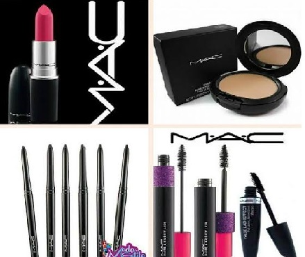

En un principio el maquillaje M·A·C solo tenía y era usado con propósitos profesionales. Debido a su gran calidad y originalidad comenzó a extenderse y a ganar fama, llegando al mercado convencional y creando stands, counters o mostradores en los grandes almacenes más prestigiosos, primero de Estados Unidos y Canadá y después a lo largo del mundo.
Mary Kay Ash fue una mujer fuera de serie. Como empresaria y filántropa, empezó su negocio en un local con un pequeño escaparate en Dallas, Texas, con cinco productos y un gran sueño: impulsar a las mujeres a transformar sus vidas, y a su vez, ayudar a más mujeres a tener éxito.
NYX Professional Makeup es una marca de maquillaje moderna, nativa digital y a la vanguardia de las últimas tendencias de belleza emergentes. Líder en la industria global de la cosmética de color, NYX Professional Makeup es una marca de maquillaje profesional asequible con todos los colores, sombras y herramientas necesarias para crear maquillaje artístico en todos los niveles.
En 1886, se fundó la empresa "California Perfume Company (CPC)" en Nueva York. ... En 1896, McConnell construyó un pequeño laboratorio en Suffern, Nueva York, lo que más tarde se convertiría en el "Avon Suffern de Investigación y Desarrollo" que servía a la empresa para realizar sus creaciones de cosmética.
Menú Principal